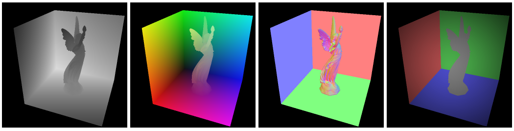
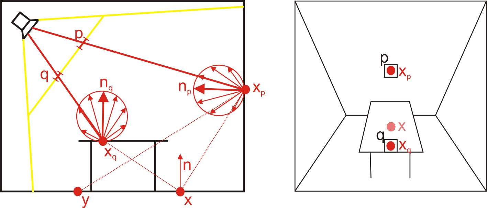
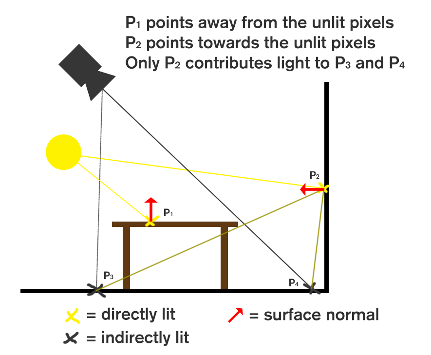
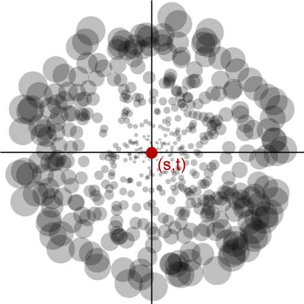
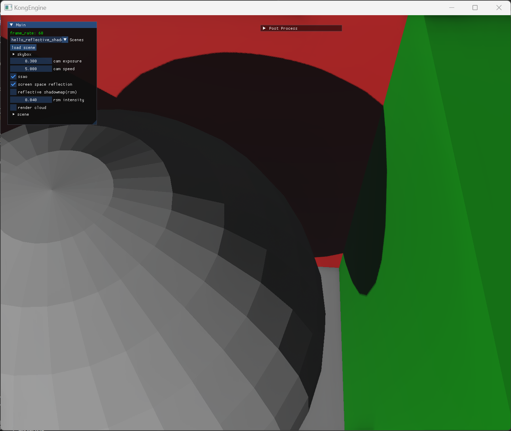
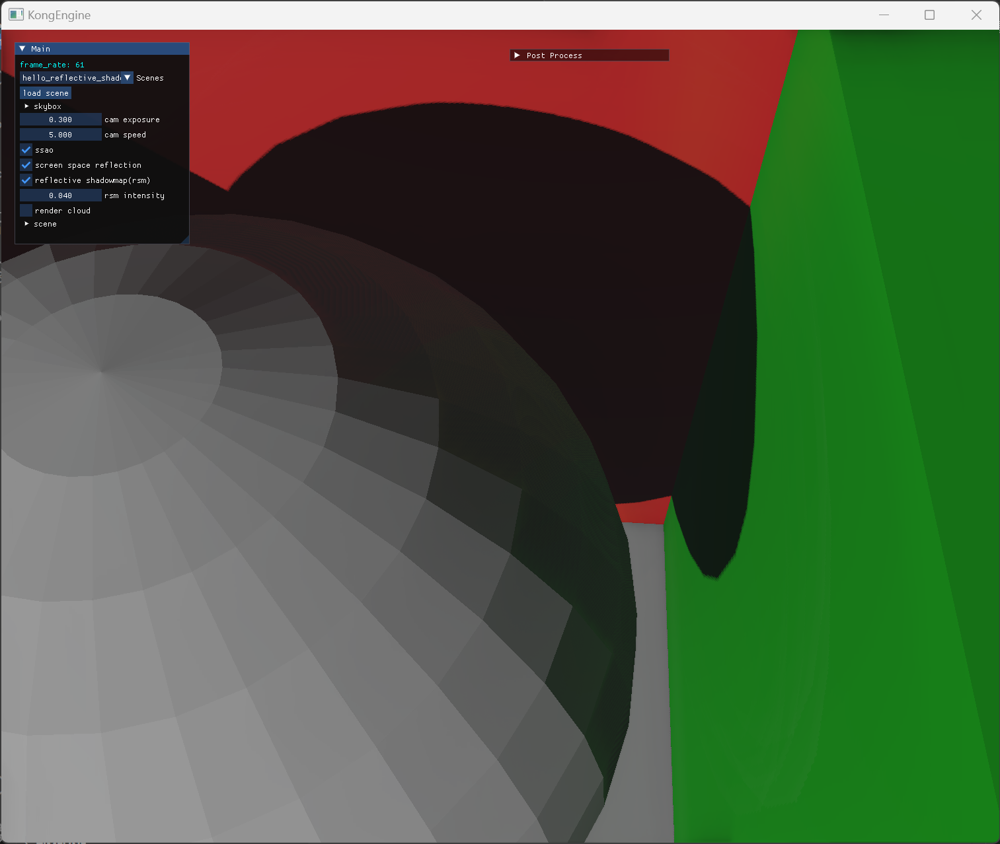
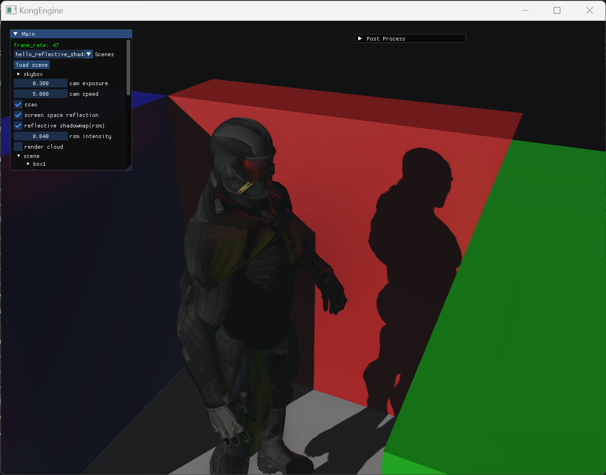

反射阴影贴图
反射阴影贴图简介
反射阴影贴图（Reflective Shadow Map）是实现全局光照效果的一个非常经典的方法，它是在这篇论文中被提出。
直接光照和间接光照
它的名字中带有“阴影贴图（Shadow Map）”几个字，所以乍看之下这个方法似乎是用来解决阴影问题，或者是提升阴影效果的。其实不然，它是用来解决间接光照的问题的方法。
在一般的场景中，光照可以大致分为两类：
- 一类是直接光照，也就是物体被光源直接照亮的部分。这个类型的光照是比较好计算的，通过光源的入射角，物体表面的法线和材质，以及观察的方向等等，利用PBR的方法能够得到非常不错的效果，这个流程在KongEngine中已经基本实现了。
- 另外一个类型是间接光照，它代表的是光线经过一次甚至多次反射后照亮物体的部分。相对于直接光照，间接光照十分复杂，因为光线可能经过多次反射，想要实时的计算光的多次反射的完整路径是很难实现的。但是如果不包含间接光照的话，场景的真实度会大打折扣。在最基础的PBR渲染框架中，我们可以选择手动输入一个环境光照（Ambient Light）的颜色，可以简单的表现全局光照，但是真实性还是不够。
反射阴影贴图（下面简称RSM）这个方法，就是用于解决实时模拟间接光照的问题。
RSM算法基本介绍
RSM的核心思想是将被光源直接照亮的区域再次作为光源进行光照计算，这就是光的一次反射。RSM只计算一次光反射，因为一般来说光的第一次反射的能量残留相对来说是最大的，对场景来说有较为显著的影响，后面的反射对场景影响较小，为了性能考量可以忽略。
那么怎么知道光照直接亮了哪些区域呢？其实非常简单，在参考实现阴影贴图（Shadow Map）的概念，从光源视角下进行渲染，不在阴影中的区域就是被光源直接照亮的。另外，由于光线在漫反射时会被照亮区域的材质所影响（比如说白色的光线从红色的墙反射会变成红色，因为其他颜色被吸收，同时不同粗糙度的物质反射方式也不一样），以及照亮区域的位置和法线也会影响计算光反射的方向，因此我们在计算阴影贴图的时候，还需要保存照亮区域的颜色、世界位置、法线等数据。
下面是需要记录的数据的截图，从左到右分别是：深度、位置坐标、法线、颜色。

因此接下来光照计算可以分为以下几步：
- 首先从光源的位置和方向渲染场景，将光源视角的信息（深度，世界位置，世界法线等等）缓存到buffer中。
- 计算光照直接对环境的影响。
- 将第一步缓存的光源保存的信息加入到场景中光照的计算，加上阴影（阴影贴图）和间接光照（反射阴影贴图）。
实现反射阴影贴图的步骤
下面是在KongEngine中实现RSM的步骤。
一些前期准备
RSM需要将一些信息存储到buffer中，所以很首先需要设置新的缓冲。
1 | |
上面的部分用于构建RSM的缓冲，这些内容和之前的Shadowmap的流程类似，也可以考虑将其和Shadowmap的缓冲合并，不过为了方便自己理解目前是新建了一个。
另外RSM也新建了一个独立的shader
1 | |
shader的内容十分简单，顶点着色器简单的将顶点的世界坐标和法线传给片段着色器。
1 | |
由于这个shader是从光源视角渲染的，所以gl_Position是由光源的light_space_mat对世界坐标做变换。
片段着色器将RSM所需的内容存储起来。
1 | |
我们这里分别将世界坐标、世界法线和颜色存储了到了贴图中。
方便起见，KongEngine暂时只支持平行光源的RSM效果，点光源的目前不支持。
现在我们的平行光源已经有了RSM相关的信息了，在计算光照的时候将这些贴图信息传到光照计算的shader中。
1 | |
间接光源的判定
RSM的实际原理如下面两张图所示：

假如当前我们片段着色器计算的是X点的光照，在这个场景中，x点被桌子的阴影挡住了，并没有被光源直接照亮，如左图所示。所以x点的直接光照为0。
接下来是间接光照的部分。如上面所说，我们将被光源直接照亮的部分当做光源，这里先以被光源直接照射的两个点Xp和Xq来做判断。Xp点被光源照亮，他的法线是Np，光在Xp点散射后是有可能到达X点的，在数学上的判断就是Np和Xp到X连线的点乘大于0。而Xq的法线Nq和Xq到X点连线的点乘小于0，可以从图上看到光在Xq点散射后是无法到达X点的。
当然我们还知道，在计算PBR的时候，不同的材质的光线散射形状是不一致的，在图中的表现就是，光线散射后沿着XpX方向的分量，比沿着XpY方向的分量是要小的。因此间接光源的法线和两点之间的连线的点乘大小有这判定间接光源亮度的作用。
下面这张图和原理图1是一样的，强化一下理解。

采样间接光源
之前说到，需要用被光源照亮的点作为间接光源。如果渲染屏幕上像素点的时候对所有照亮的点都去做判断的话，理论上是可以得到最好的效果，但是性能上会有极大的消耗；相反如果采样点过少的话，计算速度虽然是上去了但是效果会大打折扣。
因此一个优化方法是通过重要性采样。我们判断离当前渲染点越近的间接光照光源对当前点的最终效果影响就越大，因此离当前点近的间接光源采样点就会越多。并且，为了弥补远处的采样点过少可能带来的问题，引入权重的概念，随着采样点离当前点越近，权重越小。

下面是采样点初始化的示例代码：
1 | |
结合上面的两个思想，下面是部分最终代码的呈现，位于defer_pbr.frag中。
1 | |
最终效果
结合了反射阴影贴图后，场景会有一些间接光照效果了，下面是同一个场景的表现效果。


这里是另外一组。


可以看到开启rsm后，靠近红色和绿色墙壁，且没有被光源直接照亮（处于阴影）的部分，被墙壁的散射光源间接点亮了。灰色的球体和人物模型“沾染”上了墙壁的颜色。这种间接光照的影响使得场景变得更加的真实。
但是，当前的rsm也并不是完美的，比如说目前rsm缺乏判定间接光源是否可达，在第二个例子中，人物模型的右肩上的间接光源呈现的是黄色，也就是红色和绿色的间接光照结合起来的颜色。但是右肩理论上不应该出现红色的分量，因为红色的部分会被身体部位阻挡。渲染点的法线应该也会影响间接光的表现。
另外就是被当成间接光源的只有被光源照亮且存储起来的部分区域，也就是说间接光源的采样范围相对来说还是比较局限的，不可能采样非常大的区域。在KongEngine中由于采用了CSM来处理阴影，RSM的范围和CSM的最小级的阴影范围采样是一致的，这种处理显然无法照顾大的场景。
场景的间接光照还需要进一步的去优化，RSM只是其中一个小部分。